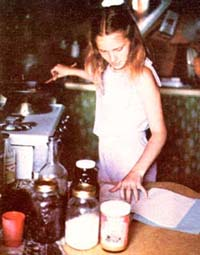
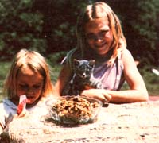

MOTHER feels strongly that youths can be creative "doers" working toward more ecological and self-reliant lifestyles . . . whether their tasks be raising chickens on a farm or maintaining rooftop container gardens in the city. To support the endeavors of our often overlooked "underage" citizens, we're glad to publish well-written articles from younger children and teenagers concerning projects they've undertaken. However, we recommend that all young authors query (that is, send us a letter telling about the story you'd like to do) before writing a full article. Address inquiries to Mother's Children, THE Mother Earth News(restricted), 105 Stoney Mountain Road, Henderson vilk, North Carolina 28791.
My eating habits have really changed since I switched to healthful foods. I like my natural diet, especially because I make a lot of desserts ... and those wholesome treats taste great!
Of course, natural goodies are better for you than the kind of sweets most people make or buy, since they contain healthful ingredients like whole wheat flour ... sunflower seeds. . . carob ... raisins ... and nuts. And my desserts are always made with molasses, honey, yinnie rice syrup, or barley malt syrup instead of white sugar. I don't use sugar because I know it's bad for my body. (Did you realize that a 12-ounce cola drink can have 9 teaspoons of sugar in it? Anyone who drinks a lot of sodas is likely to have rotted teeth. By eating good food, though, I can help keep our family's dentist and other health bills low!)
Anyway, one day my mother was doing the wash and my sister was asleep, so I was all alone. I sat down and wrote up a little cookbook, called "Nature's Goodies", that contained the dessert recipes I'd made up. I'd like to share them with you here.
NATURE'S GOODIES
CRUNCHY COOKIES
1/3 cup of soft butter or margarine
1/2 cup of molasses
1 egg
1 teaspoon of vanilla
1-1/4 cups of oatmeal
6 tablespoons of whole wheat flour
1/2 teaspoon of baking powder
3/4 teaspoon of salt
1 teaspoon of cinnamon
1 cup of carob chips or raisins
Mix the butter or margarine and molasses with a whisk until there are no lumps. Then stir in the egg, vanilla, oatmeal, flour, baking powder, salt, and cinnamon. Mix the dough well and add the carob chips or raisins. Drop teaspoonfuls of the dough onto an oiled cookie sheet and bake the cookies in a 350°F oven for 10 minutes, or until they're golden brown.
TWO- WAY COOKIES
1/2 cup of butter or margarine
3 cups of oatmeal
1 cup of honey
4 to 6 tablespoons of carob syrup
3/4 cup of powdered milk
1/2 teaspoon of salt
2 teaspoons of vanillat
1/2 cup of peanut butter
1/2 cup of raisins
First, melt the butter or margarine. Mix that with the rest of the ingredients. Roll the dough (it will be very stiff) into balls, dipping your hands in water when necessary to keep them from getting too sticky. You can now flatten the balls on cookie sheets and bake them in a 350°F oven until they're done ... or just store the balls in the refrigerator and eat them later as candy.
Carob Syrup: To make carob syrup, mix 1 cup of carob powder with 1 cup of water and cook it until it's a little thick. It can be refrigerated and used as a topping, too.
PRINCESS CAKE
1/2 cup of sesame oil
1 cup of molasses
1 tablespoon of honey
2 eggs
1/2 teaspoon of vanilla
1 cup of milk
1/2 teaspoon of grated lemon peel
3 cups of whole wheat flour
3 teaspoons of baking powder
1/2 teaspoon of baking soda
1/2 teaspoon of salt
Cream together the oil, molasses, and honey. Then beat the eggs and stir them into the mix along with the vanilla, milk,and lemon peel. Now, in a separate bowl, sift together the dry ingredients. Combine everything, pour the batter into an oiled 9" cakepan, and bake the dessert at 350°F for 35 minutes or until it tests done.
To make a carob frosting, combine 5 tablespoons of carob powder, 2 or 3 tablespoons of honey, 4 tablespoons of milk, and 2 teaspoons of water. Spread the topping over the cooled cake. You might also try making a tofu strawberry frosting (I used this once when I was giving a "school's out" party) by mashing together a cup of tofu and a cup of fresh strawberries.
CAROB BROWNIES
3/4 cup of whole wheat flour
1/4 teaspoon of baking soda
1/4 teaspoon of salt
1/3 cup of margarine
1/4 cup of honey
3/4 cup of molasses
1 to 1-1/2 cups of carob chips
1/2 teaspoon of vanilla
2 eggs, beaten
1/2 cup of chopped nuts
Mix the flour, baking soda, and salt in a bowl. Put that aside and heat your margarine, honey, molasses, and carob chips until the carob chips melt. Add the warm mixture to your dry ingredients ... stir in the vanilla and eggs ... and then mix in the nuts. Put all this into an oiled 9" pan and bake it at 375°F for 30 to 35 minutes. These brownies are chewy and great-tasting!
CAROB-COVERED RICE CAKES
1/4 cup of butter or margarine
1 cup of carob chips
1/4 to 1/2 cup of evaporated milk
12 rice cakes
Melt the butter or margarine in a large frying pan. Next, add the carob chips and evaporated milk. Stir the ingredients over low heat until everything is melted. Now, turn off the flame and stir the mixture until it thickens. Dip your rice cakes, one at a time, into this syrup (make sure you coat both sides of each one). Then put the treats on wax paper until they're cool and store them in the refrigerator.
DOUBLE CAROB BROWNIES
1 cup of sifted carob powder
1/2 cup of sesame oil
1/2 cup of molasses
4 eggs
1 cup of ground peanuts
5 tablespoons of wheat flakes
1 cup of sunflower seeds
2 teaspoons of vanilla
1 cup of coconut
1/2 cup of carob chips
Mix all of the ingredients together. Spread the batter evenly in an oiled 9" X 9" cakepan. Cook the treat in a 350°F oven for 30 minutes, or until a knife inserted into the brownies comes out clean.
Maybe I can help you use my recipes if I share some of the lessons I learned when I first started cooking. I remember times when I'd pour the batter for one of the desserts into a pan, put it into the oven, and start waiting for it to cook ... and my mother would come in and say, "Did you oil the pan and turn on the oven?" I'd cry, "Oh no, I forgot!" and then I'd have to dump the mix back into a bowl ... wash the pan ... oil it... pour the batter back into the cakepan ... turn on the oven... and (finally!) start cooking the dessert!
Also, you should always check the oven before you turn it on to make sure something else isn't already in it. One time I burned my shoes! (They'd been put in the oven to dry out.) Remember, too, to use a potholder, and to be careful when you're working around stoves and ovens. And don't forget to clean up the mess you make when you're cooking. Otherwise you might not be allowed to bake anymore!
I hope you enjoy my recipes as much as I do, and that you get a lot of use out of them. My family, and just about everybody we know, says these sweets taste much better than storebought desserts. I bet you'll think so, too. They do taste a little different from those more common treats ... but they sure are yummy!
|
PHOTOS SUPPLIED BY THE AUTHOR Danette melts the butter for a batch of Two- Way Cookies and checks her handwritten cookbook for the next step. |
The author, her sister Jess, and the cat ... ready to dig in! |
 |
|
 |
|
|